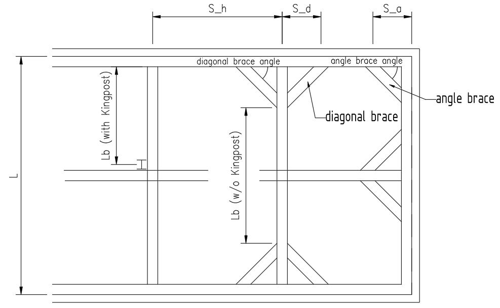

FEM Results of (loading)
Displacement, moment, shear, strut load, diagrams, wall check, and support check.
Maximum / minimum across all stages
Strut / anchor loads (all stages)
Per-stage profiles (hover to see values)
Checks
Wall checks use the overall envelope result. Support checks use the selected support member and its maximum axial force across all stages.
Wall input
Wall output
Support Summary
Support section
| Item | Value |
|---|---|
| Wale Section | |
| Horizontal Strut Section | |
| Angle Brace Section | |
| Diagonal Brace Section |
Support geometry
| Item | Value |
|---|---|
| Horizontal strut spacing, s_h (m) | |
| Horizontal strut length, L (m) | |
| Buckling length, Lb (m) | |
| Angle brace spacing, s_a (m) | |
| Angle brace angle, theta(deg) | |
| Distance to wall, s_d (m) | |
| Diagonal brace angle, theta(deg) |
Geometry reference

Wale check
▾Wale result
Wale calculation
Horizontal strut check
▾Horizontal strut result
Horizontal strut calculation
Angle brace check
▾Angle brace result
Angle brace calculation
Diagonal brace check
▾Diagonal brace result
Diagonal brace calculation
Ground Anchor Summary
Common Anchor Parameters
| Parameter | Value |
|---|---|
| Design load override, Tw (tf) | |
| Number of strands, N | |
| Strand diameter, D' (cm) | |
| Strand area, A (cm²) | 0.9871 |
| Tensile load per strand, fs (kgf) | 18458.8 |
| 0.2% proof load, fy (kgf) | 15694.9 |
| Grout compressive strength, fc' (kgf/cm²) | |
| Bond length, La (m) | |
| Drill hole diameter, D (cm) | |
| Ultimate grout-ground bond, τu (kgf/cm²) |